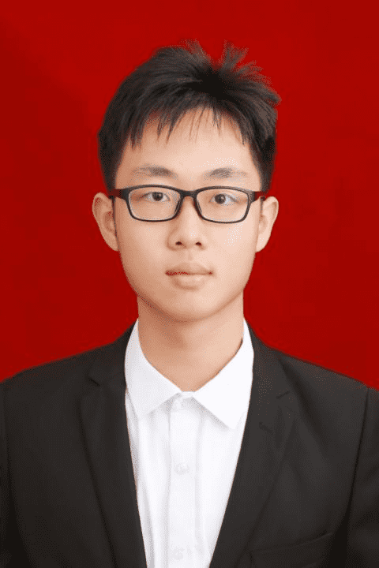

兰州大学萃英学院 2023 级地球科学萃英班（拔尖计划）
主修大气科学 · 辅修计算机科学与技术 & 集成电路设计微专业
知其不可而为之
跨学科研究：大气科学 × 人工智能 × 遥感 × 环境科学。主持多项国家级、校级科研项目，参与中科院课题。
气候暖湿化背景下，基于深度学习对铁路沿线小流域进行短临降水智能预测，结合致灾风险推演模型，为铁路安全运营提供科学依据。导师：胡淑娟教授（大气科学学院）。
提出 Skill-Aware Feature Extraction via Mixture of Experts 创新方案。用可学习的 SkillRouter 从 5 个专家层动态提取特征并加权组合，11 篇 CCF-A / 顶会论文支撑，~265 行代码，参数量增加不到 0.04%。导师：党吉圣老师（信息科学与工程学院）。
研究微量污染物共暴露对河流生态系统的环境影响，涵盖污染物种类识别、生态效应评估、数据分析与建模。独立完成项目设计、申报、团队组建与方案制定，获校级科研项目立项。
为 AliCPT（阿里宇宙微波背景辐射偏振望远镜）项目开发数据可视化软件，涉及天体物理数据处理、异常检测算法与交互式可视化系统构建。
应用深度学习算法（U-Net 语义分割）处理光学遥感数据，基于毕节滑坡数据集（DEM、遥感影像、标注）构建黄土地区滑坡早期预警模型。
参与中科院大气物理研究所课题，研究复杂地形条件下低空风场的短临预报方法，探索误差修正策略，提升风场预报精度。
设计可在海洋、陆地、空中多环境下运行的智能无人作业平台，整合固定翼飞行器、无人车与水上作业模块，实现跨域协同。
参与固定翼飞行器垂直起降技术研发及高速智能驾驶系统设计，CUADC 固定翼无人机视觉识别系统独立开发并开源（GitHub: NOBEL-Pxx/CUADC_Vision_System）。
研究 ESG 评级分歧现象及其对机构投资者持股决策的影响机制，为可持续投资策略提供实证分析支持。
承担课题组撰写人工智能相关学术著作的任务，系统梳理 AI 领域前沿进展，为学术出版物提供技术内容支撑。
数学建模 · 挑战杯 · 人工智能 · 数学竞赛 · 英语作文 —— 多维度竞赛经历。
奖学金 · 荣誉称号 · 学生工作 · 志愿服务 · 体育成就
地球科学 + 计算机科学 + 集成电路 + 社会治理 —— 跨学科知识融合。
从雅礼中学到兰州大学萃英学院，主修大气科学，辅修计算机科学与技术及集成电路设计。
童年成长 · 诺贝尔奖梦想萌芽
初三空降班 · 求学转折点
6A 录取 · 百年名校
地球科学萃英班（拔尖计划）· 大气科学
参与 AI 技术在新媒体中的应用探索
推文阅读量破 6000，培养 3 名独立编辑，获年度优秀部门负责人
17 份情报研判报告 + 母婴用品价格预警系统 → 纳入"民生政策监测工具箱"
"冬至包饺子"成为经典活动，增强班级凝聚力
参与基层团建培训工作
立志为祖国夺得下一个诺贝尔奖
以行动诠释青年担当
不达目的不罢休
用所学解决实际问题
以真心赢得尊敬
"穷则独善其身，达则兼济天下"
—— 彭小溪的人生信条